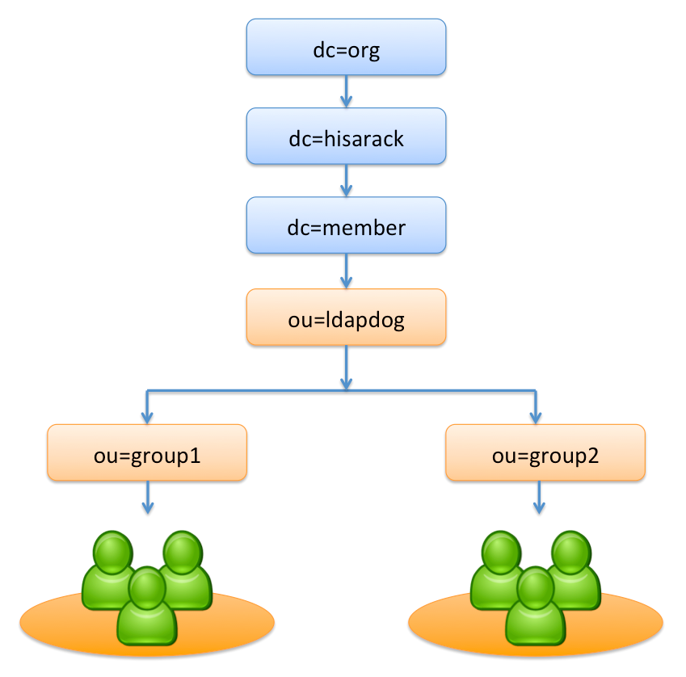

Introduction
LDAPDOG is Cacti's plugin which let your Cacti supports multi-tenancy funcionality by OpenLDAP. For example, your company has 2 teams who are responsible to maintain system enviornment. Team 1 is responisble to maintain networking. Team 2 is responsible to maintain system and database. They use Cacti to monitor system's status. LDAPDOG can let each team only operate their server's monitoing. Team 1 cannot modify the monitoring configuration which is belonged to Team 2. Assume OpenLDAP Diagram is show as aboved:
Installation
1, Configure Cacti LDAP authentication setting. 2, Set LDAP User Template, change default policy of tree permissions from allow to deny. 3, Replace auth_login.php in Cacti Folder, and put plugins/ldapdog into plugins folder. 4, Enable LDAPDOG plugin. Well done!